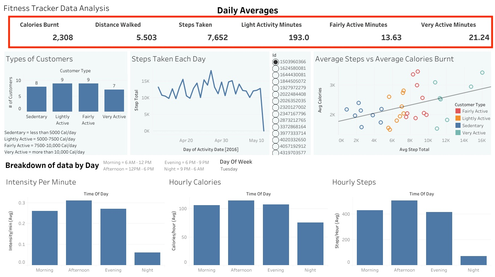
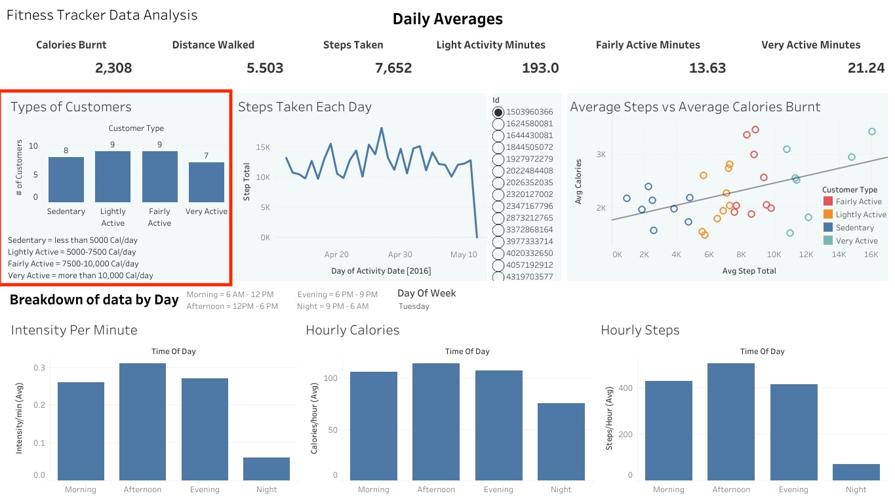
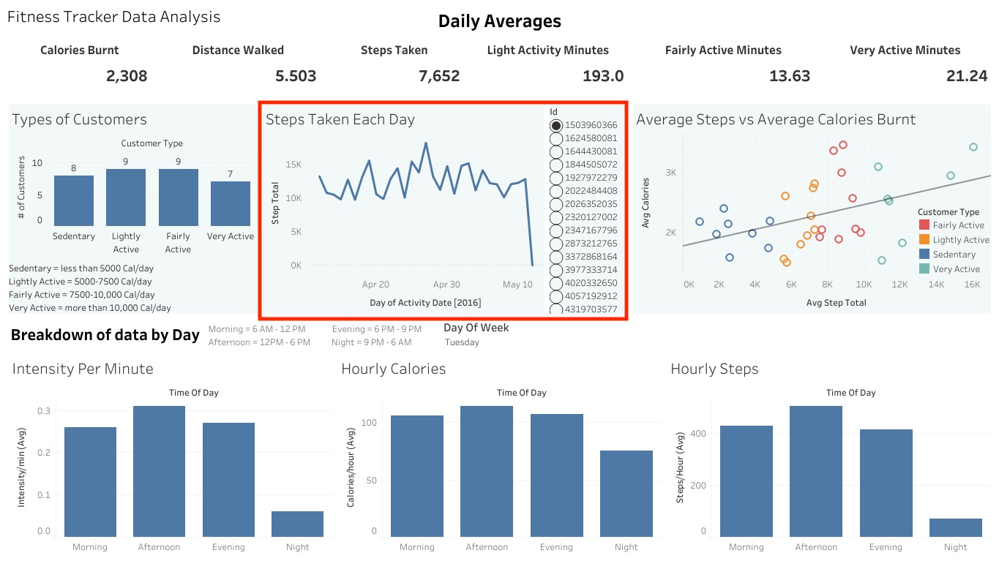
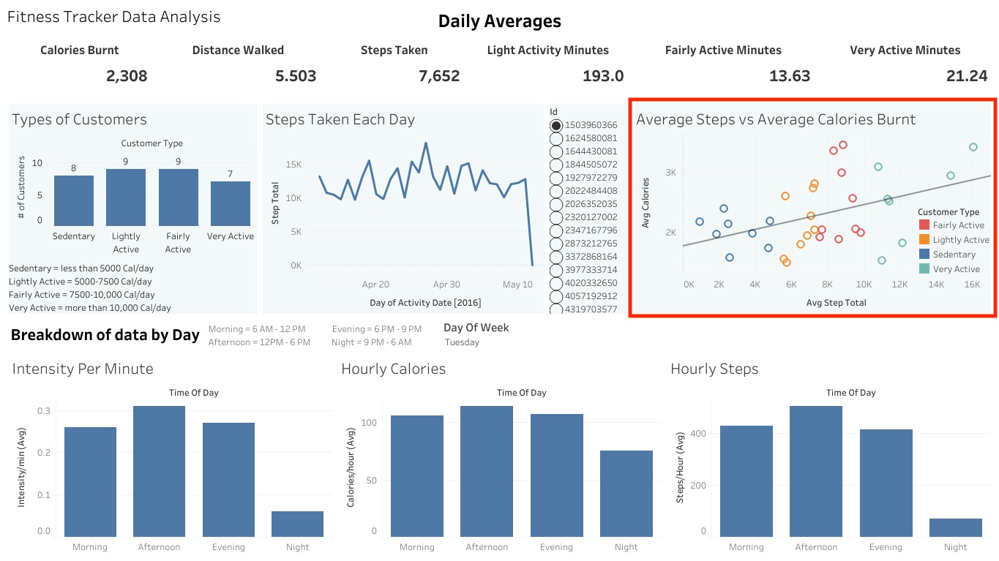
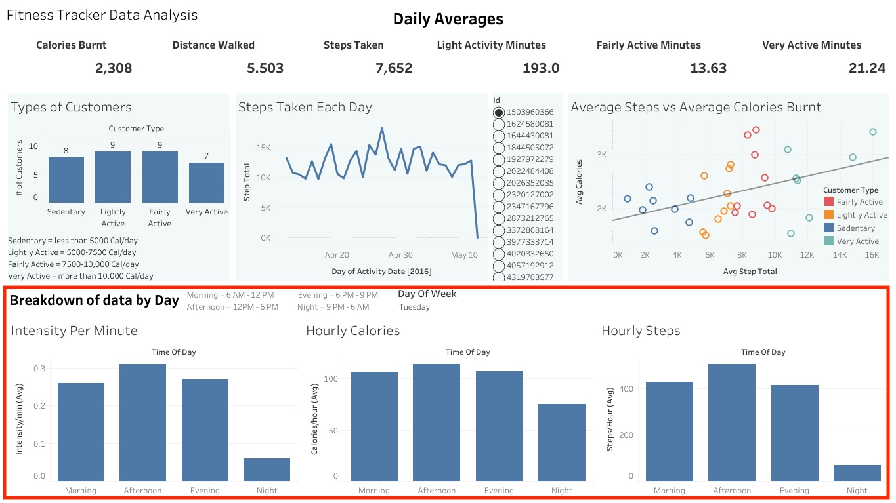

Bellabeat Fitness Tracker
Table of Contents
Background
Bellabeat is a company that produces fitness trackers specifically focused towards women.
I will be looking at public data from a rival fitness tracker company to try and gather insights so that Bellabeat can better guide their marketing strategy.
There are three goals for this report:
- Show trends in fitness tracker usage
- Identify how these trends could apply to the Bellabeat Leaf
- Identify how this could help influence Bellabeat's marketing strategy
Preparing the Data
Key Objectives
- Identifying the Dataset Used:
- The data used came from this dataset on Kaggle. The data is licensed for use in the public domain.
- This dataset generated by respondents to a distributed survey via Amazon Mechanical Turk between 03.12.2016-05.12.2016. Thirty eligible Fitbit users consented to the submission of personal tracker data, including minute-level output for physical activity, heart rate, and sleep monitoring. I will be focusing on the daily and hourly data to see what patterns emerge on usage of fitbit by day of week and time of day.
- Determining Credibility of Data
- This data comes from a public data source where all participants agreed to have their personal data shared publicly. There are only 30 participants so it is not a large data set. However, after some analysis, the data covers a wide range of users in terms of how active they are which adds to the credibility. This is a good starting dataset but a larger dataset could be used to verify analysis.
- Preparing Data for Upload to BigQuery
- My first taks was to download all of the data from on Kaggle. This dataset is made of 18 csv files that cover fitness tracker data by the minute, hour, and day.
- In order for the data to easily be imported into BigQuery, the format of all the columns needs to be correct. I inspected all of the data using Goolge Sheets. What I noticed was the column listing the time was not in the proper date time format. This can be easily fixed by selected the column with listed time and then going to format and selecting the Date Time format under Numbers. I repeated this process for all of the minute and hourly data files. My data is now ready to be uploaded into BigQuery.
- Using SQL in BigQuery to Format and Organize the Dataset
- Once the data is uploaded into a project in BigQuery, the first thing I needed to do was identify the primary key in this dataset that I can use to join tables. I used the following query to identify the most commonly used column name.
SELECT
column_name,
COUNT(table_name)
FROM
`oxman-bellabeat-casestudy.Fitbit_Data.INFORMATION_SCHEMA.COLUMNS`
GROUP BY
1;
This query showed that the column name "Id" occurred 18 times throughout the dataset.
We can double check that the 18 "Id" columns come from each of the 18 data tables by running the following code:
SELECT
table_name,
SUM(CASE
WHEN column_name = "Id" THEN 1
ELSE
0
END
) AS has_id_column
FROM
`oxman-bellabeat-casestudy.Fitbit_Data.INFORMATION_SCHEMA.COLUMNS`
GROUP BY
1
ORDER BY
1 ASC
This showed that each table gave a result of 1 meaning each table has one column with the name "Id". This means I will use the column "Id" as the primary key to join different tables to complete my analysis.
Processing the Data
Key Objectives
- Creating Summary of Data for Each User
- I want a summary of all the different data for each user. This means joining the daily tables for intensity, calories, activity, sleep, and steps.
I also want to give a customer type to each user based on the average amount of steps they take in a given day. Below is the query I used to accomplish this:
/* identify what variables I want to show in the final table. I want averages for each user. I also give a customer type to each user based on their average daily steps taken */ SELECT A.Id, ROUND(AVG(A.Calories),2) AS AvgCalories, ROUND(AVG(S.StepTotal),2) AS AvgStepTotal, CASE WHEN AVG(S.StepTotal) < 5000 THEN "Sedentary" WHEN AVG(S.StepTotal) BETWEEN 5000 AND 7500 THEN "Lightly Active" WHEN AVG(S.StepTotal) BETWEEN 7500 AND 10000 THEN "Failry Active" ELSE "Very Active" END AS Customer_type, ROUND(AVG(A.TotalDistance),2) AS AvgTotalDistance, ROUND(AVG(I.SedentaryMinutes),2) AS TotalSedentaryMinutes, ROUND(AVG(I.LightlyActiveMinutes),2) AS AvgLightlyActiveMinutes, ROUND(AVG(I.FairlyActiveMinutes),2) AS AvgFairlyActiveMinutes, ROUND(AVG(I.VeryActiveMinutes),2) AS AvgVeryActiveMinutes, ROUND(AVG(I.SedentaryActiveDistance),2) AS AvgSedentaryActiveDistance, ROUND(AVG(I.LightActiveDistance),2) AS AvgLightActiveDistance, ROUND(AVG(I.ModeratelyActiveDistance),2) AS AvgModeratelyActiveDistance, ROUND(AVG(I.VeryActiveDistance),2) AS AvgVeryActiveDistance, FROM `Fitbit_Data.daily_activity` A LEFT JOIN `Fitbit_Data.daily_calories` C ON A.Id = C.Id AND A.ActivityDate=C.ActivityDay AND A.Calories = C.Calories LEFT JOIN `Fitbit_Data.daily_intensities` I ON A.Id = I.Id AND A.ActivityDate=I.ActivityDay AND A.FairlyActiveMinutes = I.FairlyActiveMinutes AND A.LightActiveDistance = I.LightActiveDistance AND A.LightlyActiveMinutes = I.LightlyActiveMinutes AND A.ModeratelyActiveDistance = I.ModeratelyActiveDistance AND A.SedentaryActiveDistance = I.SedentaryActiveDistance AND A.SedentaryMinutes = I.SedentaryMinutes AND A.VeryActiveDistance = I.VeryActiveDistance AND A.VeryActiveMinutes = I.VeryActiveMinutes LEFT JOIN `Fitbit_Data.daily_steps` S ON A.Id = S.Id AND A.ActivityDate=S.ActivityDay LEFT JOIN `Fitbit_Data.daily_sleep` Sl ON A.Id = Sl.Id AND A.ActivityDate=Sl.SleepDay GROUP BY(Id) - Creating Daily Stats for Each User
- Now I have averages for each user by I want a table that will show all the stats for each user on any given day.
So I will use the following query to build a table with each users stats for each day.
SELECT A.Id, A.Calories, * EXCEPT(Id, Calories, ActivityDay, SleepDay, SedentaryMinutes, LightlyActiveMinutes, FairlyActiveMinutes, VeryActiveMinutes, SedentaryActiveDistance, LightActiveDistance, ModeratelyActiveDistance, VeryActiveDistance), I.SedentaryMinutes, I.LightlyActiveMinutes, I.FairlyActiveMinutes, I.VeryActiveMinutes, I.SedentaryActiveDistance, I.LightActiveDistance, I.ModeratelyActiveDistance, I.VeryActiveDistance FROM `Fitbit_Data.daily_activity` A LEFT JOIN `Fitbit_Data.daily_calories` C ON A.Id = C.Id AND A.ActivityDate=C.ActivityDay AND A.Calories = C.Calories LEFT JOIN `Fitbit_Data.daily_intensities` I ON A.Id = I.Id AND A.ActivityDate=I.ActivityDay AND A.FairlyActiveMinutes = I.FairlyActiveMinutes AND A.LightActiveDistance = I.LightActiveDistance AND A.LightlyActiveMinutes = I.LightlyActiveMinutes AND A.ModeratelyActiveDistance = I.ModeratelyActiveDistance AND A.SedentaryActiveDistance = I.SedentaryActiveDistance AND A.SedentaryMinutes = I.SedentaryMinutes AND A.VeryActiveDistance = I.VeryActiveDistance AND A.VeryActiveMinutes = I.VeryActiveMinutes LEFT JOIN `Fitbit_Data.daily_steps` S ON A.Id = S.Id AND A.ActivityDate=S.ActivityDay LEFT JOIN `Fitbit_Data.daily_sleep` Sl ON A.Id = Sl.Id AND A.ActivityDate=Sl.SleepDay; - Creating Daily Summary Segmented by Part of Day
- The next part of the data I wanted to look at was how the user's data looked depending on what part of the day it was (morning, afternoon, evening, and night).
I used the following query to breakdown each day into segments and then summarize the users' data for each part of the day.
/*Declare the variables for the segments of the day then set times to each variable */ DECLARE MORNING_START, MORNING_END, AFTERNOON_END, EVENING_END INT64; SET MORNING_START = 6; SET MORNING_END = 12; SET AFTERNOON_END = 18; SET EVENING_END = 21; WITH /*This will create a new table that we can use later where the time stamp of each data point is converted into a day of week and a part of day */ user_steps_dow_summary AS ( SELECT S.Id, FORMAT_TIMESTAMP("%w", S.ActivityHour) AS dow_number, FORMAT_TIMESTAMP("%A", S.ActivityHour) AS day_of_week, CASE WHEN FORMAT_TIMESTAMP("%A", S.ActivityHour) IN ("Sunday", "Saturday") THEN "Weekend" WHEN FORMAT_TIMESTAMP("%A", S.ActivityHour) NOT IN ("Sunday", "Saturday") THEN "Weekday" ELSE "ERROR" END AS part_of_week, CASE WHEN TIME(S.ActivityHour) BETWEEN TIME(MORNING_START, 0, 0) AND TIME(MORNING_END, 0, 0) THEN "Morning" WHEN TIME(S.ActivityHour) BETWEEN TIME(MORNING_END, 0, 0) AND TIME(AFTERNOON_END, 0, 0) THEN "Afternoon" WHEN TIME(S.ActivityHour) BETWEEN TIME(AFTERNOON_END, 0, 0) AND TIME(EVENING_END, 0, 0) THEN "Evening" WHEN TIME(S.ActivityHour) >= TIME(EVENING_END, 0, 0) OR TIME(TIMESTAMP_TRUNC(S.ActivityHour, MINUTE)) <= TIME(MORNING_START, 0, 0) THEN "Night" ELSE "ERROR" END AS time_of_day, SUM(StepTotal) AS total_steps, AVG(StepTotal) AS average_steps, SUM(Calories) AS total_Calories, AVG(Calories) AS average_Calories, SUM(TotalIntensity) AS total_intensity, AVG(TotalIntensity) AS average_total_intensity, SUM(AverageIntensity) AS total_average_intensity, AVG(AverageIntensity) AS average_intensity, MAX(AverageIntensity) AS max_intensity, MIN(AverageIntensity) AS min_intensity, /*The following will join the hourly tables for steps, calories, and intensities */ FROM `oxman-bellabeat-casestudy.Fitbit_Data.hourly_steps` S LEFT JOIN `oxman-bellabeat-casestudy.Fitbit_Data.hourly_calories` C ON S.Id=C.Id AND S.ActivityHour=C.ActivityHour LEFT JOIN `oxman-bellabeat-casestudy.Fitbit_Data.hourly_intensities` I ON S.ID=I.Id AND S.ActivityHour=I.ActivityHour GROUP BY 1, 2, 3, 4, 5) /*Next I need to select what I want from the table I created earlier (user_steps_dow_summary) Everything will be grouped by day and then broken down into the part of the day. It will be ordered by the day of the week and then the part of the day (this is the reason for the CASE clause assigning values to the parts of the day).*/ SELECT part_of_week, day_of_week, time_of_day, SUM(total_steps) AS total_steps_whole_group, ROUND(AVG(total_steps),2) AS average_total_steps_whole_group, AVG(average_steps) AS average_hourly_steps_per_person, SUM(total_Calories) AS total_Calories_whole_group, ROUND(AVG(total_Calories),2) AS average_Calories_whole_group, AVG(average_Calories) AS average_hourly_Calories_per_person, SUM(total_intensity) AS total_intensity_whole_group, Round(AVG(total_intensity),2) AS average_intensity_whole_group, ROUND(AVG(average_total_intensity),2) AS average_intensity_per_person, ROUND(SUM(total_average_intensity),2) AS total_intensity_per_minute_whole_group, ROUND(AVG(total_average_intensity),2) AS average_intensity_per_minute_whole_group, ROUND(AVG(average_intensity),2) AS average_per_minute_intensity_per_person, ROUND(AVG(max_intensity),2) AS average_max_per_minute_intensity_per_person, ROUND(AVG(min_intensity),2) AS average_min_per_minute_intensity_per_person FROM user_steps_dow_summary GROUP BY 1, dow_number, 2, 3 ORDER BY 1, dow_number, 2, CASE WHEN time_of_day = "Morning" THEN 0 WHEN time_of_day = "Afternoon" THEN 1 WHEN time_of_day = "Evening" THEN 2 WHEN time_of_day = "Night" THEN 3 END ; - Show Summary of Data
- At the top of my dashboard, I want to show a summary of all the data so stakeholders can get a quick idea of what is in the dataset.

- Types of Customers
- To get a sense of the type of customers the data represented, a bar chart will be inserted showing a breakdown of customers by their activity level
 - Daily Steps Per User
- A graph was created to allow the stakeholder to look at any individual user and see their daily steps taken over the month where data was collected.
 - Steps and Calories Relationship
- A graph and trend line were created to show the relationship between how many steps a user takes and how many calories they burn.
 - Time of Day Breakdown
- Three bar graphs were created to show how intensity per minute, haourly calories burned, and hourly steps taken changed throughout the day. Stakeholders can choose a specific day of the week or look at all the days combined.
 - Show trends in fitness tracker usage
- Identify how these trends could apply to the Bellabeat Leaf
- Identify how this could help influence Bellabeat's marketing strategy
- Type of Customer
- There was an even distrubution with the type of customers the data covered. There were 8 Sedentary, 9 Lightly Active, 9 Fairly Active and 7 Very Active. This means that even know it is a fairly small sample size, it covers a wide range of customers and can give us an idea of what our entire customer base would look like.
- Steps Taken Each Day
- Looking at indivuals and how thier daily stps changed throughout the month, there was wide variation in how many steps were taken. Some users went multiple days with no data, others only had a couple days with high numbers. In summary, almost all of the users were very inconsistent with the amount of steps they took on a daily basis or did not wear their tracker every day.
- Average Steps vs Average Calories
- Looking at the trend line there is appears to be a relationship between the amount of steps a user takes and the amount of calories they burn. However, this trend was not as strong as I first expected with an R2 of only 0.192.
- Breakdown by Part of Day
- When you look at the data that is broken down by part of day, some interesting trends pop up.
- The part of the day with the highest inensity, calories, and steps is the afternoon. This is true for each day of the week.
- Morning and evenings are very similar most days, except for Fridays which have much higher evenings than mornings. This is the only day of the week where the stats for evening are close to those for afternoon.
- Overall, the trends are very similar for each day with just slight variations
- Similarities
- Bellebeat Leaf works very similar to the fitbit in gathering data on activity, stress, and sleep so we would expect the data to be very similar for the Leaf
- Differences
- Leaf is marketed directly towards women so the data would be slightly different compared to a data set including all genders
- Not all fitness trackers track data in the same way. We have our own proprietary software for bellabeat products that will count sleep, steps, and stress in a slightly different way
- Based on Summary Data
- The average weekly amount of very active minutes (exercise minutes) was 148.68. This is under the 150-300 a week recommended by the CDC (see study here). We can market this to consumers implying they need our fitness tracker because the average American does not get the required exercise and that our tracker will help them achieve this goal
- The same strategy can be used for steps taken. The average amount of steps was 7.652 while the recommended amount of steps is 8,000 - 10,000
- Based on steps taken each day
- Looking at the steps taken each day for different users, it is clear that most people are very inconsistent with thier activity. What we can develop and then market is a proprietary notification system that will track your averages over time, then will give you notifications when it predicts you will underperform on any given day.
- Based on daily breakdown data
- It is clear that the afternoon is users most active part of the day. We can use this to do something similar we did with the step data. During the evenings, which is after 6 pm, users were far less active than earlier in the day. We can use a notification system to motivate users to stay active even later into the day. We can market this saying our fitness tracker will make sure you stay active during all parts of the day.
- This same concept can be used by the hour. If a user has not moved for a while, then notifications can be sent out to make the user aware so they can break up their sedentary time.
Visualizing the Data
Key Objectives
I will be using the dashoboarding platform Tableau to visualize all of my data
Analysis Report (To Stakeholders)
Key Objectives
Trends in the Data
How these trends apply to Bellabeat Leaf
Recommendations for marketing strategy
Conclusion
Most users are inconsistent with their activity on a daily basis and it is not spread evenly throughout the day. We can design our device and market it as a fitness tracker that never sleeps on you. It is constantly studying your data to track your fitness and give you notifications and nudges to stay consistently active throughout the day and the week. We will also market this to all types of people because on average, Americans are not active enough and we can help them achieve their fitness goals